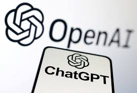

O SapperNews é um portal de notícias criado por Samuel Sapper Alves, pensado para reunir informações relevantes com rapidez, clareza e
credibilidade. Com uma proposta moderna e dinâmica, o site aborda temas como atualidades, tecnologia, cultura e acontecimentos locais,
sempre com linguagem acessível e visual atrativo. A ideia do projeto é oferecer ao leitor uma experiência simples, informativa e confiável.
1 - Notícias de Tecnologia
OpenAI lança novo modelo para melhorar a geração de imagens no ChatGPT
A OpenAI apresentou o Images 2.0, um modelo focado em aprimorar a criação de imagens dentro do ChatGPT, com destaque para a melhoria na escrita
de textos dentro das imagens e para saídas mais estruturadas, chegando à resolução 2K. A atualização busca resolver limitações comuns das IAs
generativas, especialmente na fidelidade visual e na legibilidade de conteúdo textual.

Logo da marca OpenAI, mundialmente conhecida pela inteligência artificial ChatGPTLeia Mais
O lançamento reforça a disputa entre empresas de inteligência artificial por ferramentas mais avançadas de criação visual, já que a qualidade
do texto embutido nas imagens sempre foi um dos maiores desafios do setor. Com isso, a OpenAI tenta tornar o ChatGPT ainda mais útil para
trabalhos criativos, comunicação e produção de conteúdo.
Brasil deve investir até R$ 2 trilhões em tecnologia entre 2026 e 2029, segundo projeção da Brasscom
A Associação das Empresas de Tecnologia da Informação e Comunicação (Brasscom) divulgou um relatório projetando que o Brasil deverá investir cerca de
R$ 2 trilhões em tecnologia entre 2026 e 2029, com destaque para computação em nuvem e inteligência artificial, que devem concentrar a maior parte
dos aportes; o estudo aponta que a nuvem e a IA deverão crescer em torno de 20% ao ano, impulsionando a modernização de empresas e a infraestrutura
digital do país.
A Brasscom é a Associação das Empresas de Tecnologia da Informação e Comunicação (TIC) e de Tecnologias Digitais do Brasil.Leia Mais
O relatório setorial da Brasscom mostra que a nuvem deve receber cerca de R$ 765,6 bilhões e a inteligência artificial aproximadamente
R$ 736,6 bilhões nesse período, enquanto segmentos como Internet das Coisas (IoT) e mobilidade, dados e banda larga também ganham aportes
significativos, somando dezenas de bilhões de reais; esses investimentos refletem uma aposta no fortalecimento da economia digital brasileira,
com mais eficiência para empresas, expansão de data centers e maior uso de ferramentas como IA generativa e análise de dados em larga escala.